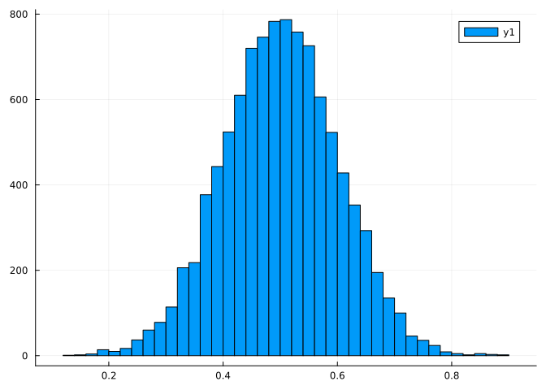
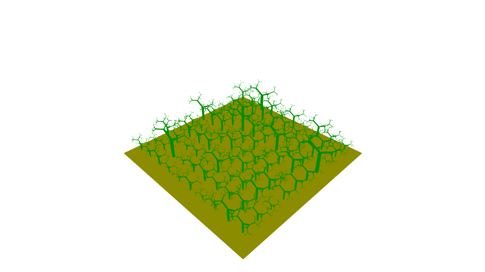

Centre for Crop Systems Analysis - Wageningen University
Published
March 5, 2023
In this example we extend the binary tree example into a random binary forest, where each tree is described by a separate graph object and parameters driving the growth of these trees vary across individuals following a predefined distribution.
The data types, rendering methods and growth rules are the same as in the binary tree example:
Rule replacing nodes of type Main.rbtree.Meristem without context capturing.
The main difference with respect to the binary tree is that the growth parameter will differ across individuals. Also, the starting point of the turtle will differ per individual. To achieve this we need to:
Add an additional initial node that moves the turtle to the starting position of each binary tree.
Wrap the axiom rule and the creation of the graph into a function that takes the required parameters as inputs.
functioncreate_tree(origin, growth) axiom =T(origin) + rbtree.Internode(0.1) + rbtree.Meristem() tree =Graph(axiom = axiom, rules =Tuple(rule), vars = rbtree.treeparams(growth))return treeend
create_tree (generic function with 1 method)
The code for elongating the internodes to simulate growth remains the same as for the binary tree example
getInternode =Query(rbtree.Internode)functionelongate!(tree, query)for x inapply(tree, query) x.length = x.length*(1.0+vars(tree).growth)endendfunctiongrowth!(tree, query)elongate!(tree, query)rewrite!(tree)endfunctionsimulate(tree, query, nsteps) new_tree =deepcopy(tree)for i in1:nstepsgrowth!(new_tree, query)endreturn new_treeend
simulate (generic function with 1 method)
Let’s simulate a forest of 10 x 10 binary trees with a distance between (and within) rows of 2 meters. First we generate the original positions of the trees. For the position we just need to pass a Vec object with the x, y, and z coordinates of the location of each tree. The code below will generate a matrix with the coordinates:
origins = [Vec(i,j,0) for i =1:2.0:20.0, j =1:2.0:20.0];
We now simulate the values of the growth parameter, by sampling values for a normal distribution (in practice you would determine this distribution from experiments). We can implement a function that returns random values with the desired characteristics but take into account that randn implements the standard Normal distribution (so mean = 0 and standard deviation = 1) so we need to scale it
growth_distr(n) =0.5.+randn(n)./10
growth_distr (generic function with 1 method)
You may also use the Distributions Julia package (you will need to install it first) that allows to construct different distributions and sample from them. For now, let’s work with this ad-hoc function but before we use it to generate the growth parameters of the different trees, let’s visualize it using the Plots package (as before, you need to install it first if you have not done so already):
usingPlotshistogram(growth_distr(10_000))

So our trees will have, on average, a relative growth rate of 0.5 (like in the binary tree example) but each individual tree can have any value, mostly between 0.2 and 0.8. Let’s generate the growth parameters for the 100 trees in our simulation:
growths =growth_distr(100);
Now we can create our random forest of binary trees by calling the create_tree function we defined earlier with the correct origins and growth parameter
forest = [create_tree(origins[i], growths[i]) for i in1:100];
The object forest contains an array of binary trees. Each tree is a different Graph, with its own nodes, rewriting rules and variables. This avoids having to create a large graphs to include all the plants in a simulation. Below we will run a simulation, first using a sequential approach (i.e. using one core) and then using multiple cores in our computers (please check https://docs.julialang.org/en/v1/manual/multi-threading/ if the different cores are not being used as you may need to change some settings in your computer).
Sequential simulation
We can simulate the growth of each tree by applying the method simulate to each tree, creating a new version of the forest (the code below is an array comprehension)
newforest = [simulate(tree, getInternode, 2) for tree in forest];
And we can render the forest with the function render as in the binary tree example but passing the whole forest at once
render(newforest)
If we iterate 4 more iterations we will start seeing the different individuals diverging in size due to the differences in growth rates
newforest = [simulate(tree, getInternode, 4) for tree in newforest];render(newforest)
Multithreaded simulation
In the previous section, the simulation of growth was done sequentially, one tree after another (since the growth of a tree only depends on its own parameters). However, this can also be executed in multiple threads. In this case we use an explicit loop and execute the iterations of the loop in multiple threads using the macro @threads. Note that the rendering function can also be ran in parallel (i.e. the geometry will be generated separately for each plant and the merge together):
usingBase.Threadsnewforest =deepcopy(forest)@threadsfor i in1:length(forest) newforest[i] =simulate(forest[i], getInternode, 6)endrender(newforest, parallel =true)
An alternative way to perform the simulation is to have an outer loop for each timestep and an internal loop over the different trees. Although this approach is not required for this simple model, most FSP models will probably need such a scheme as growth of each individual plant will depend on competition for resources with neighbouring plants. In this case, this approach would look as follows:
Here we are going to customize the scene of our simulation by adding a horizontal tile represting soil and tweaking the 3D representation. When we want to combine plants generated from graphs with any other geometric element it is best to combine all these geometries in a GLScene object. We can start the scene with the newforest generated in the above:
scene =Scene(newforest);
We can create the soil tile directly, without having to create a graph. The simplest approach is two use a special constructor Rectangle where one species a corner of the rectangle and two vectors defining the two sides of the vectors. Both the sides and the corner need to be specified with Vec just like in the above when we determined the origin of each plant. VPL offers some shortcuts: O() returns the origin (Vec(0.0, 0.0, 0.0)), whereas X, Y and Z returns the corresponding axes and you can scale them by passing the desired length as input. Below, a rectangle is created on the XY plane with the origin as a corner and each side being 11 units long:
We can now add the soil to the scene object with the add! function.
VPL.add!(scene, mesh = soil, color =RGB(1,1,0))
We can now render the scene that combines the random forest of binary trees and a yellow soil. Notice that in all previous figures, a coordinate system with grids was being depicted. This is helpful for debugging your code but also to help setup the scene (e.g. if you are not sure how big the soil tile should be). Howver, it may be distracting for the visualization. It turns out that we can turn that off with show_axes = false:
render(scene, axes =false)

We may also want to save a screenshot of the scene. For this, we need to store the output of the render function. We can then resize the window rendering the scene, move around, zoom, etc. When we have a perspective that we like, we can run the save_scene function on the object returned from render. The argument resolution can be adjust in both render and save_scene (the image will have the correct number of pixels but it looks much worse than in the original window…):
output =render(scene, axes =false)# Play around with the sceneexport_scene(scene = output, filename ="nice_trees.png")